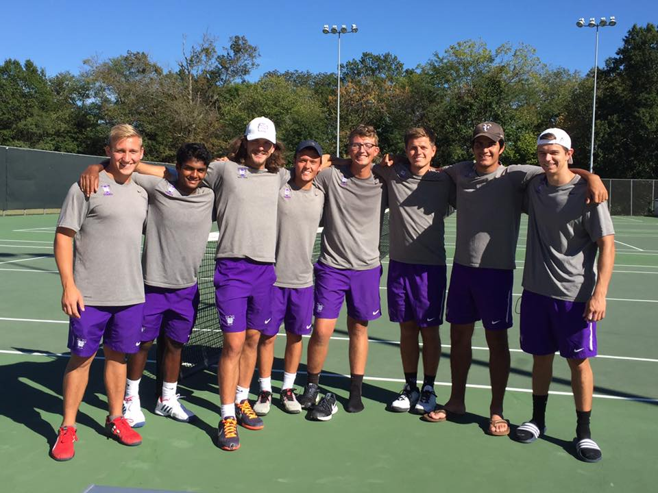

Football
I played football starting in the 7th Grade and I played all the way until I graduated from High school. Football is probably my second favorite sport to play, although sometimes I think I would have enjoyed many other sports more. Still, this was one of the main sports I played in high school and I always really enjoyed it.
Tennis
I started playing tennis when I was very young and continue to play still to this day. Tennis has always been my most favorite sport to play and I even played tennis in college at Truman State University. Tennis is an amazing, fun sport that is great to play with friends and be competitive. At one point in my life I was even a coach, and trained others and ran summer camps! In the future I plan to continue to play tennis!
Basketball
I have played basketball throughout my entire childhood, but this is one sport that I couldn't stay into. I quit basketball going into high school and I never looked back. I very much so never regretted that decision and I do not think I ever will. This sport to me is only fun recreationally, and I do still really enjoying playing for fun pick uo games. I just do not think competitive basketball is for me.
Soccer
I played soccer throughout my entire childhood. I loved soccer but both my brothers played football and they convinced me to switch over. I think I would have enjoyed to continue to play soccer because injuries in football always scared me.